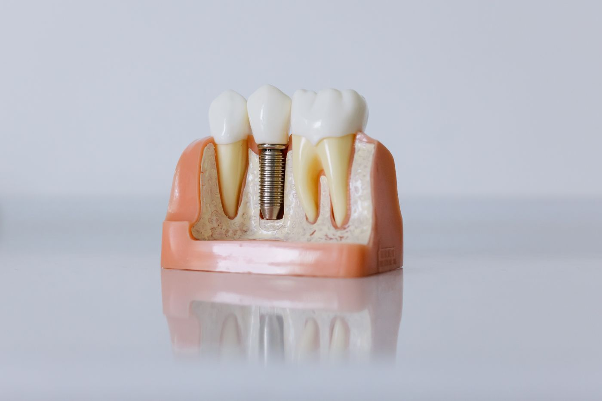
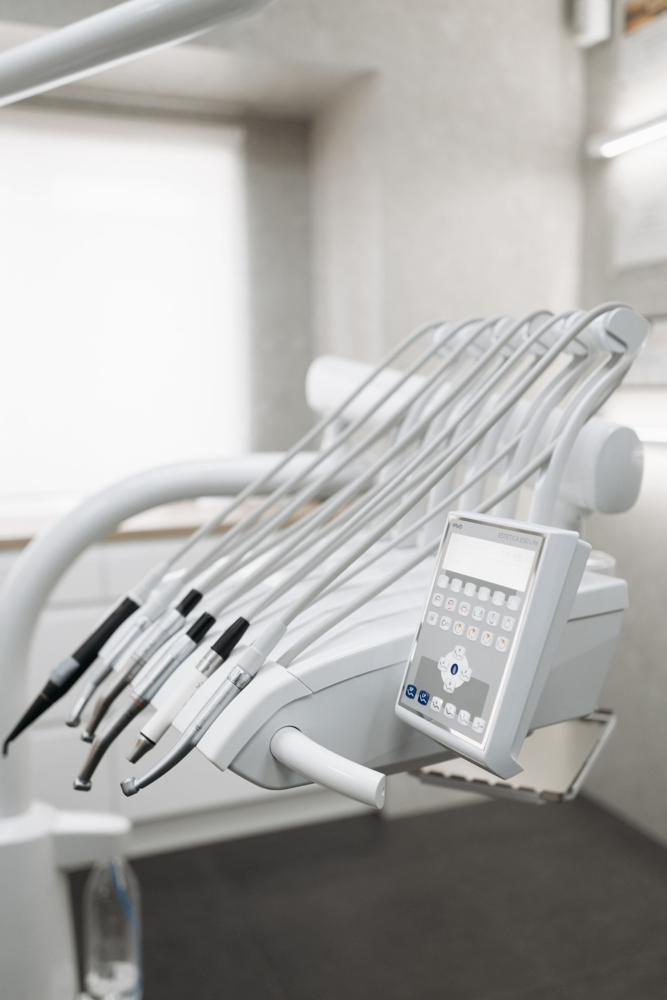
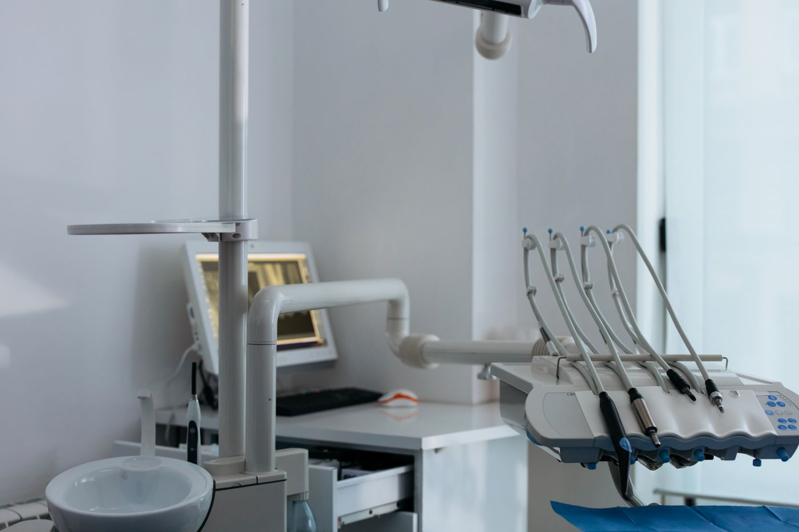
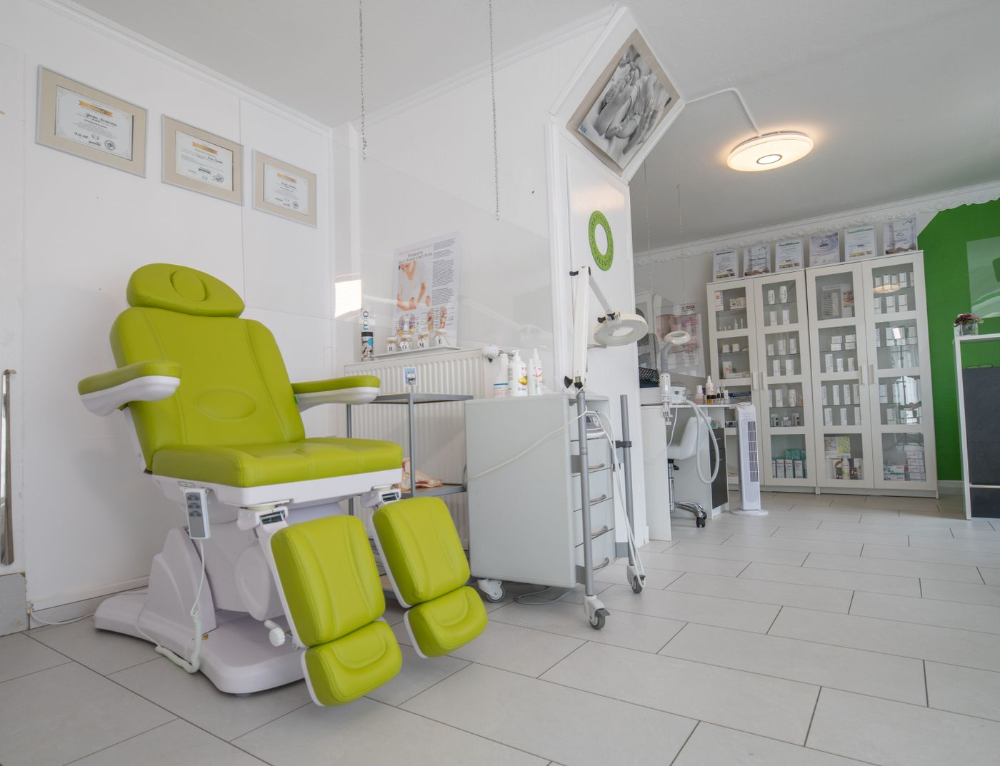
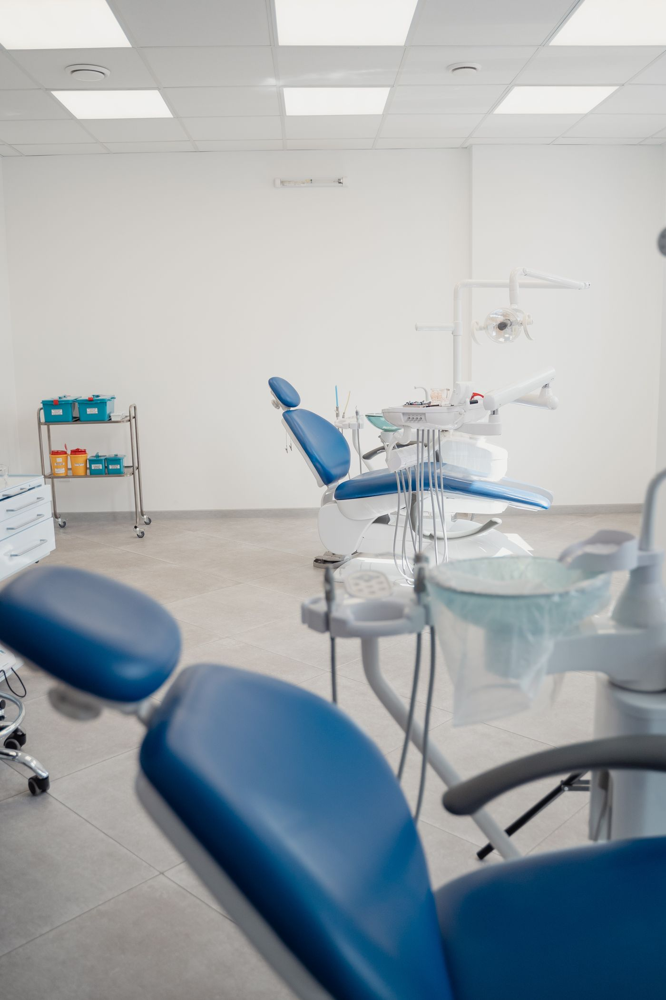
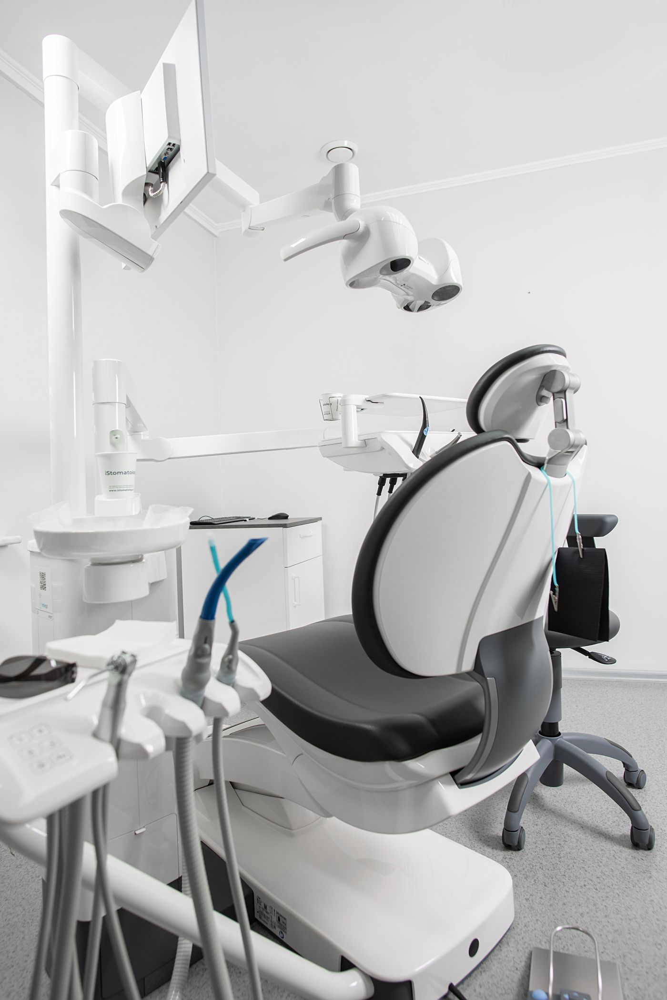

Ortho교정
김선재 대표원장
교정과 전문의. 성인 교정과 재교정을 주로 봅니다.
치아교정재교정
아프지 않게 하는 것보다, 왜 아픈지 먼저 설명해 드립니다. 오늘 무엇을 하고 얼마가 드는지 알고 앉으시게 합니다.
과목마다 진행이 다릅니다. 눌러서 확인해 보세요.





멸균 과정을 매일 기록하고, 원하시면 그 기록을 보여 드립니다.
교정과 전문의. 성인 교정과 재교정을 주로 봅니다.
임플란트와 뼈이식. 다른 곳에서 어렵다고 한 경우를 많이 봅니다.
진정치료 담당. 치과 공포가 심한 분과 아이를 봅니다.
심미 보철. 앞니와 색 맞추는 작업을 주로 합니다.
잇몸 치료와 정기 관리. 오래 지켜보는 진료를 합니다.




첫날에 치료부터 시작하지 않습니다. 보고, 설명하고, 정한 뒤에 시작합니다.
불편한 곳과 지금 드시는 약을 확인합니다. 3분이면 끝납니다.
파노라마와 필요한 경우 3D 촬영을 합니다. 촬영본은 그 자리에서 함께 봅니다.
지금 상태를 화면으로 보여 드리고, 선택지가 여럿이면 전부 말씀드립니다.
총액과 회당 금액, 보험 적용 여부를 종이로 드립니다. 여기서 결정하지 않으셔도 됩니다.
정하신 순서대로 진행합니다. 매번 시작 전에 오늘 할 일을 다시 말씀드립니다.
끝난 뒤에도 정해진 주기로 연락드립니다. 오래 쓰는 것이 목적이기 때문입니다.
| 월요일 | 09:30 – 18:30 |
|---|---|
| 화요일 | 09:30 – 18:30 |
| 수요일 | 09:30 – 18:30 |
| 목요일 | 09:30 – 21:00 야간 |
| 금요일 | 09:30 – 18:30 |
| 토요일 | 09:30 – 14:00 |
| 일요일 · 공휴일 | 휴진 |
점심시간 13:00 – 14:00 (토요일은 점심시간 없이 진료)
목요일은 21시까지 야간 진료합니다. 예약제로 운영합니다.
가능하지만 기다리실 수 있습니다. 예약하신 분을 먼저 봅니다. 급한 통증은 언제든 오세요. 순서와 상관없이 먼저 확인해 드립니다.
첫날 촬영과 설명이 끝나면 종이로 드립니다. 총액, 회당 금액, 보험 적용 여부가 적혀 있습니다. 그 자리에서 결정하지 않으셔도 됩니다.
말씀해 주세요. 손을 드시면 바로 멈춥니다. 많이 힘드신 분은 진정치료로 편하게 받으실 수 있고, 담당 원장이 따로 있습니다.
건물 지하 주차장을 2시간 무료로 쓰실 수 있습니다. 접수처에 차량 번호를 말씀해 주세요.
봅니다. 소아를 담당하는 원장이 따로 있습니다. 처음 오는 아이는 기구를 만져보고 익숙해지는 시간부터 갖습니다.
촬영본을 가져오시면 함께 보겠습니다. 저희도 어려우면 어렵다고 말씀드리고, 가능한 곳을 안내해 드립니다.
확인 후 문자로 알려드립니다. 급하시면 전화가 빠릅니다.
확인 후 문자로 알려드리겠습니다.
(견본 화면입니다. 실제로 전송되지 않습니다.)
매주 목요일 21시까지 진료합니다. 퇴근 후에도 오실 수 있습니다.